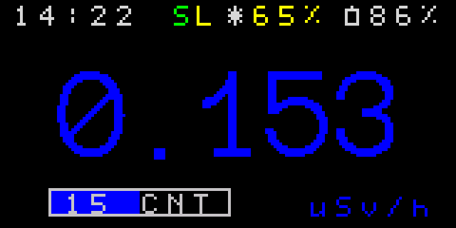
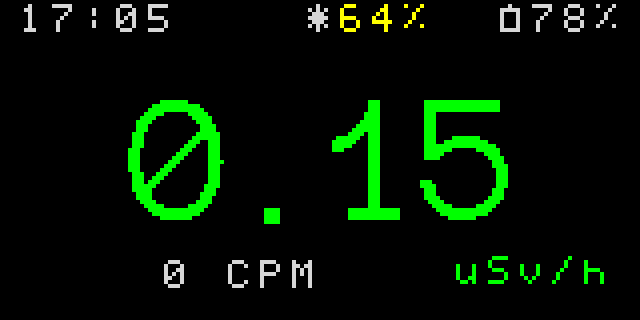
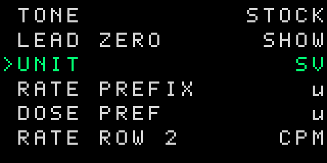
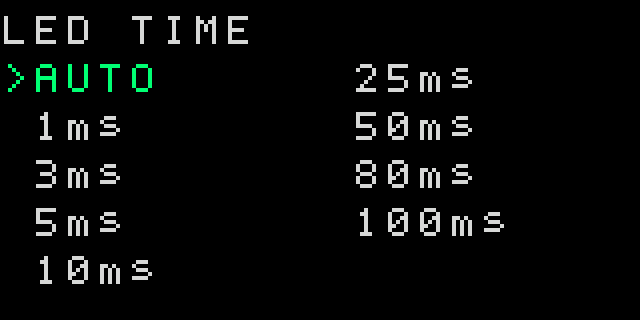
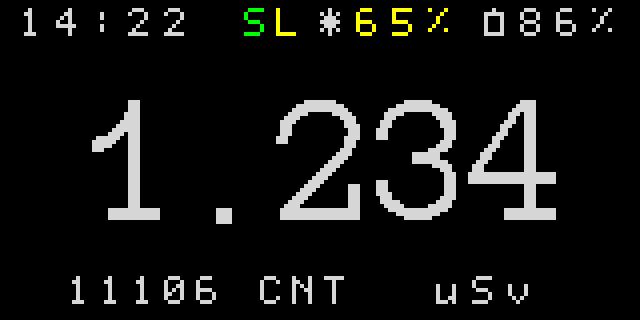
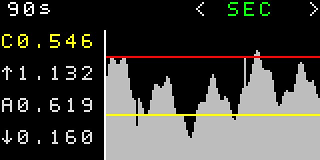
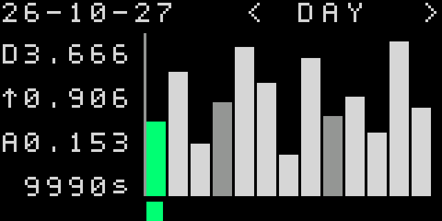

RATE · CALCULATED
—CPM
Connect over Web Serial from localhost or HTTPS. Opening the port may restart the device.
| FIELD | VALUE | DETAIL |
|---|---|---|
| DATE | — | — |
| UPTIME | — | |
| CNT | — | |
| RTC | — | |
| CLOCK | — | |
| BATT | — | — |
| BATT START | — | — |
| SOL | — | — |
| CHARGE | — | — |
| SCREEN | — | — |
| SLEEP | — | — |
| MIN | — | |
| HOUR | — | |
| DAY | — | |
| ALERT | — | |
| SEC | — | |
| STORE | — | |
| FLASH | 64 KB | |
| RAM | 8 KB | |
| EEPROM | 2 KB | |
| SPI | — | |
| JEDEC | — | |
Connect to compare or synchronize the device clock.
Use Show to control which settings appear in the device menu. Visibility requires firmware protocol support.
Flash the latest compiled .pio/build/geiger2/firmware.bin. This uses the existing image checks and does not run PlatformIO.
Recommended: dump and save a FLASH backup before programming.
Recommended: dump and save a FLASH backup before programming.
Choose which mode to start. Bootloader entry is experimental because the board’s RTS/DTR wiring is not confirmed.
Select a device port to begin.
FLASH and EEPROM are read through the STM32 ROM bootloader. SPI needs a connected compatible firmware with SPI logging enabled.
Select a device port to read FLASH or EEPROM. SPI dump is unavailable until a compatible device is connected.
python -m http.server 8000, then open http://localhost:8000/app/.Before flashing, use Firmware → Dumps → FLASH and save the downloaded backup. The local-build button flashes the latest existing .pio/build/geiger2/firmware.bin; it does not compile the firmware.
Manual flashing accepts validated STM32 .hex and .bin images. Read the image status and keep Verify after programming enabled. Reboot and dump controls are in the collapsible sections below Flash firmware.
This guide describes the device display and its two buttons. The illustrations are representative screen layouts; values shown in them are examples.
On the two main screens, short Right switches between Level and Dose. Long Right opens the extra-screen group. While held there, it advances through Settings and Debug; release when the desired page appears. Long Left exits a menu or returns to the main screen. On the Level screen, long Left toggles the flashlight.
The large value is the current dose rate. The top row shows device time, solar input, and battery status. The smaller second row can show CPM/CPS, a rolling rate statistic, or a CNT warm-up progress bar, depending on Settings. The letter at the top indicates the selected indication mode; a flashlight marker appears when its manual light is on. The counter color and LEDs can change with the configured thresholds.
Short Left cycles the indication modes. Short Right opens Dose. Long Left toggles the flashlight. Long Right opens the extra screens.


Long Right opens the settings list. Short Left/Right moves the highlight. Long Right activates the highlighted item. Simple options with up to three choices change immediately. For options with more choices, long Right enters value editing; short Left/Right cycles through values, long Right saves, and long Left cancels. The list includes display and LED behavior, click sounds, brightness and screen timeout, units and prefixes, secondary rows, dose period and alarms, log memory (EEPROM, SPI, or off), long-press timing, reset/cleanup actions, Power Off, and Reboot. Some items depend on the selected units or hardware. The device clock is set from the app's Settings page.


Shows date, time, uptime, pulse count, RTC and clock, power readings, log counts and store state, and memory sizes with SPI identification in one table. TIME, POWER, LOGS, and MEMORY sections start expanded and can be collapsed independently. Short Left/Right moves between Settings and Debug.
Shows accumulated dose for the period selected by DOSE PERIOD in Settings: uptime, current day, or total. The unit and optional second row are configurable. The second row can show a count, rate-like value, another period total, or be turned off in Settings. Short Left cycles the indication modes; short Right returns to Level; long Right opens the graph pages.

Long Right from Dose opens the graph view. Short Left/Right selects SEC, MIN, HOUR, DAY, or ALERT. In SEC, long Right cycles the live CPM window through 10, 30, 60, and 90 seconds. The Logs tab in this app lists minutes, hours, days, and alerts from the same firmware reader as these graphs.
For a log graph, long Right advances the white selected column. Its time or date appears at the top left; the first statistic is its average rate, while the others summarize the visible columns. Long Left returns to Dose. LOG MEMORY selects EEPROM, SPI, or OFF. Changing EEPROM/SPI transfers the available history before saving the new choice; OFF preserves stored records.


Screen colors, values, times, battery and solar percentages in these SVG renders are illustrative. They are not live readings or calibration references.
Web Serial requires a supported browser and a secure context such as localhost or HTTPS.
Web app: Unreleased development build · Device protocol: v1
HELLO startup check. Unlisted project builds are started without that check.See project open items for the current hardware and firmware verification list.